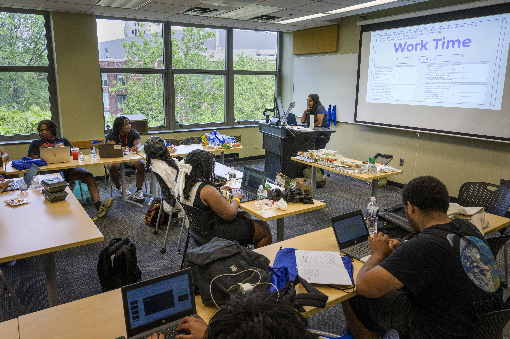
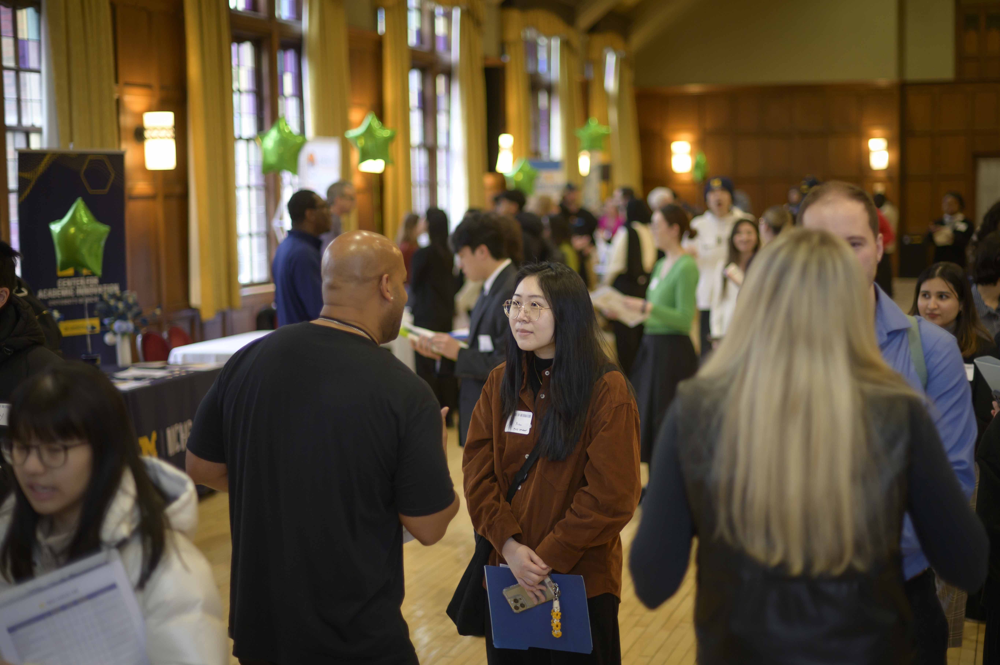

Networking and Connecting
Building a Strategic Networking Plan
Build an intentional plan using a LAMP list and prioritize outreach.
Conference Prep Workshop
Set clear goals, identify speakers/alumni, and reach out with tailored messages.
Outreach Messages
Planning an Informational Interview
The TIARA Method (Trends, Insight, Advice, Resources, Assignments) structures great conversations.
Career Fair Preparation
Register in advance, research employers, prepare multiple copies of your resume, and follow up after.